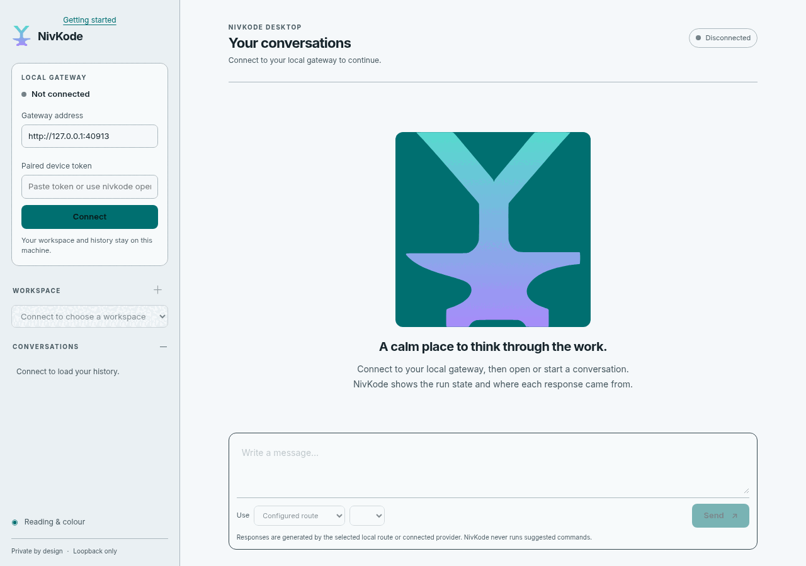
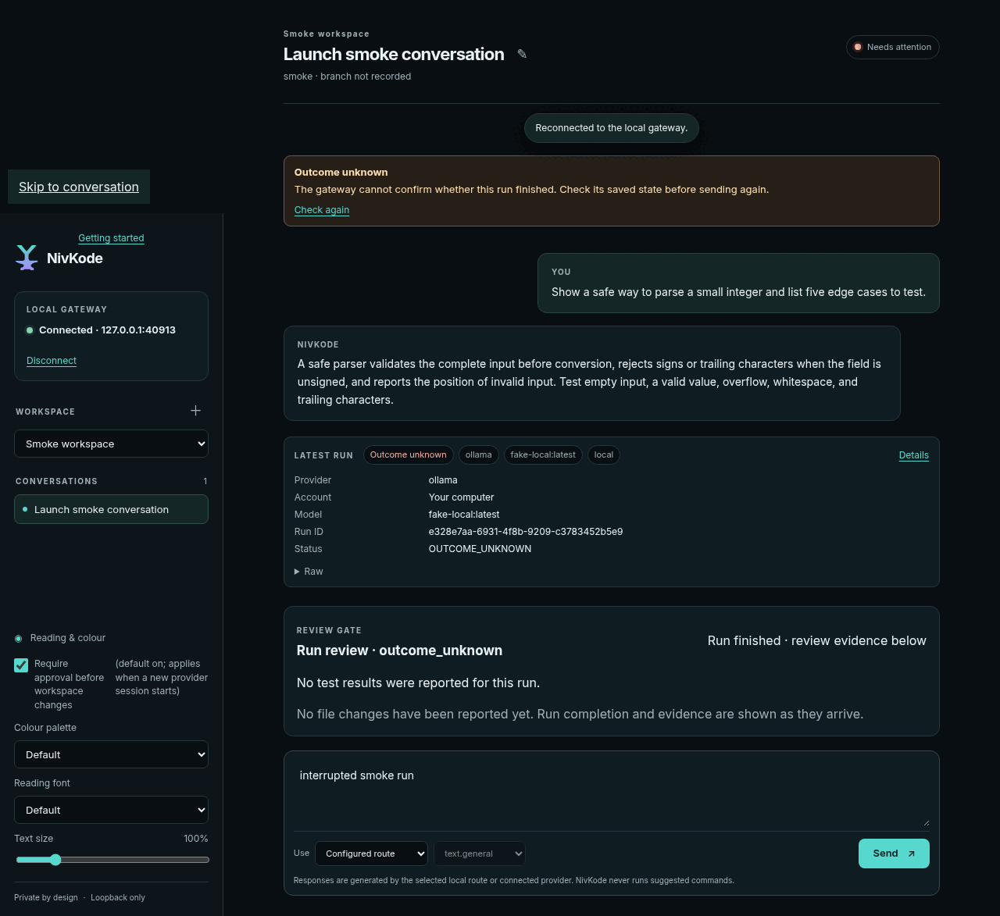
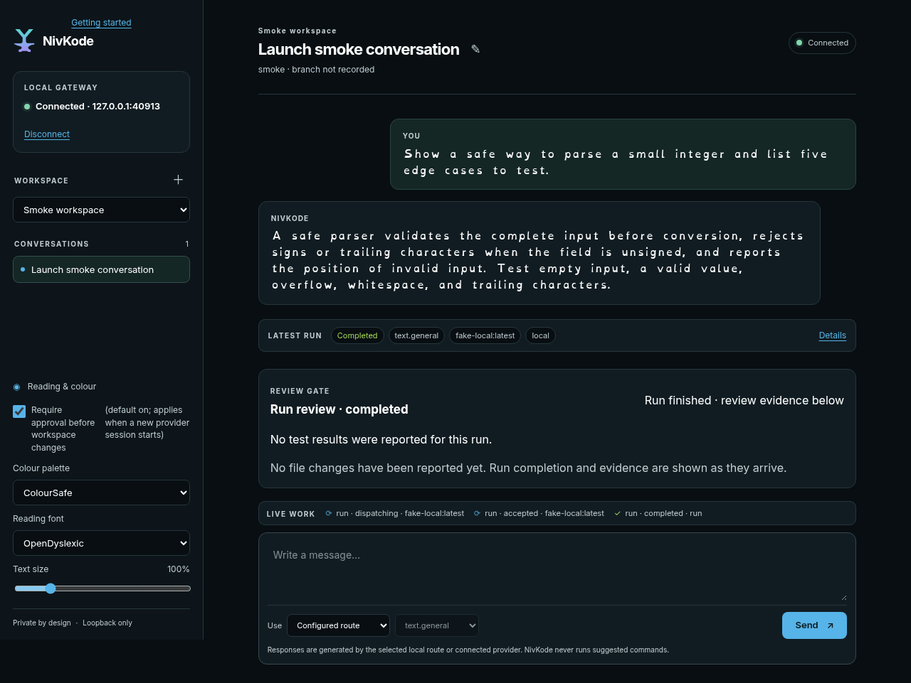
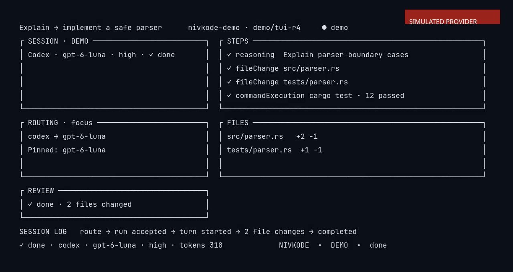

We are developing NivKode as a desktop app, command-line tool and terminal view for working with AI coding assistants. In the desktop app, new conversations start on a local model when one is installed. When a conversation uses Codex, NivKode sends that conversation to OpenAI under your own account.
Launch target AGPL-3.0-onlyMay move if testing finds issues.
What it is
Development direction
Desktop app
We are developing a desktop app for working with AI coding assistants.
Command-line tool and terminal view
We are developing command-line and terminal interfaces for NivKode.
Provider options
In the desktop app, new conversations start on a local model when one is installed. Defaults in other clients vary. Claude has not yet been tested in NivKode; the adapter is contract-only.
Review gate: We are evaluating workspace controls and approval flows in a review candidate. Human review and release approval are pending.
Accessibility themes: We are evaluating reading-font choices, text controls and colour palettes in a review candidate. Human review and release approval are pending.
Licence: AGPL-3.0-only. The source code is not public yet.
Screenshots
From the 0.1.0 RC8 review candidate.
These images come from automated test runs using a simulated local provider, not from live provider sessions.

Desktop onboarding. Connect to a gateway on your own machine.

The review gate. When a run's outcome is unknown, NivKode says so instead of assuming tests passed.

Accessibility themes. ColourSafe palette with the OpenDyslexic reading font.

Terminal view. A scripted demo session (simulated provider), from the RC6 walkthrough.
Known limitations
What we have and have not tested.
NivKode 0.1.0 is a review candidate. Human release approval is still pending and nothing is published yet.
The tested desktop build is Linux x86_64. Other systems have not been tested.
Automated smoke tests used a simulated provider. Live-provider and Android device test results are not reported here.
The Android app is a preview that you build yourself. Human review and release approval are pending.
The launch date may move if testing finds problems.
Follow progress
Launch target: 2 November 2026; may move if testing finds issues.